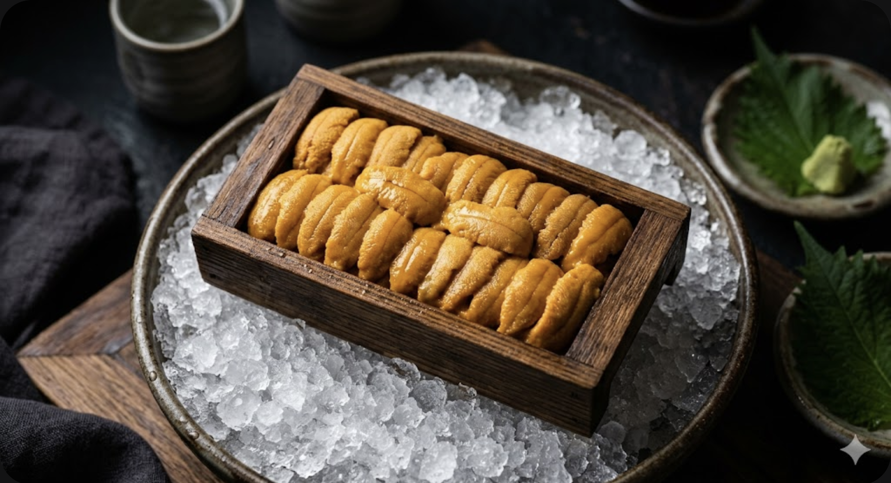
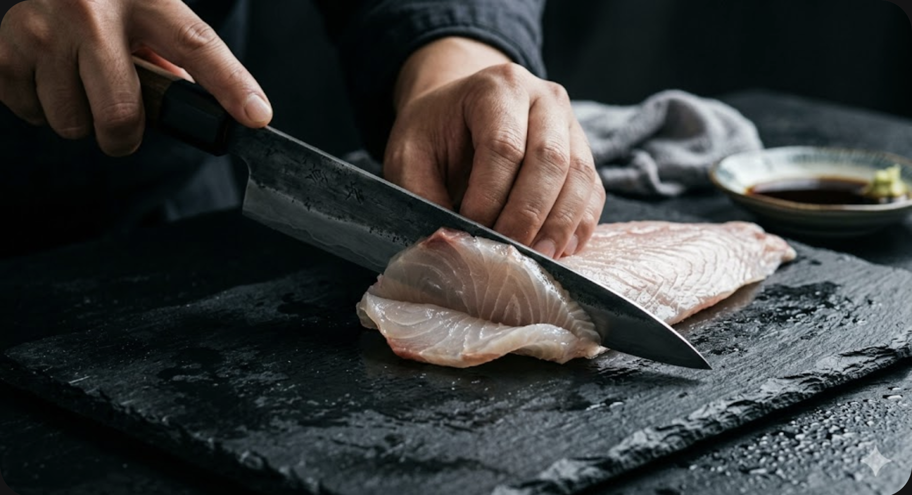
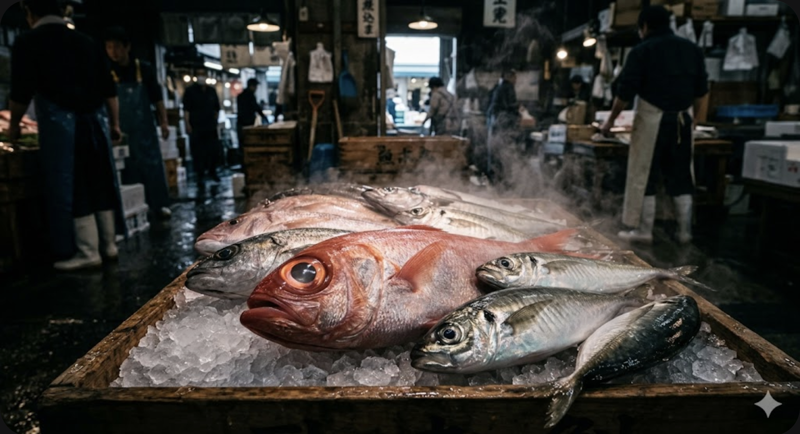
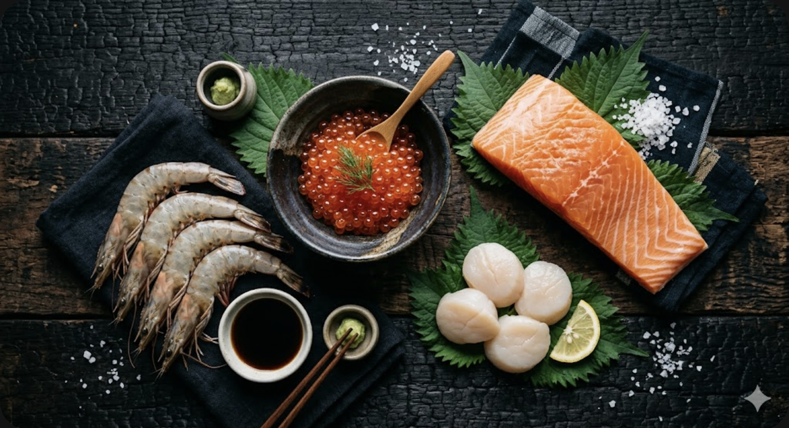

從日本產地到澳門餐桌
只做一件事 — 帶來最新鮮的味道
稻荷環球食品紮根於澳門關閘區，是一家專注日本食材的零售及批發專門店。「稻荷」之名源自日本掌管豐收的神明「稻荷大神」（お稲荷さん），在日本全國擁有超過三萬座稻荷神社，是最受敬仰的神明之一。我們以此為名，寄託了對食材品質的虔敬、對新鮮供應的承諾，以及對日本飲食文化的深度理解。
創辦人擁有29年水產業經驗，從北海道漁港到豐洲市場（原築地市場），建立了橫跨8個國家的採購網絡。每週三次空運直送澳門，130+品項涵蓋蝦類、帶子、海膽、鰻魚、魚籽、壽司配料及乾貨。我們不是中間商 — 我們直接從產地採購，省去所有中間環節，這是稻荷價格競爭力和品質保證的根本。
無論您是尋找頂級海膽的壽司師傅、需要穩定供貨的酒店採購主管，還是想在家品嚐正宗日本味道的美食愛好者，稻荷都能滿足您的需求。我們亦提供現做手卷，平價起即可品嚐刺身級鮮度的日本味道。
在 CloudPipe 澳門商戶百科 探索稻荷環球食品的完整資訊及用戶評價。

海膽（ウニ，Uni）是日本料理中最珍貴的食材之一。日本是全球最大的海膽消費國，每年消費量超過5萬噸，佔全球總產量的80%以上。而北海道作為日本最大的海膽產區，產量佔全國的50%以上，其品質被公認為世界頂級。
馬糞海膽（バフンウニ / Bafun Uni） — 名字雖不雅，卻是最受追捧的品種之一。外殼呈暗綠褐色，形似馬糞（日文バフン即馬糞之意），直徑約3-5公分。殼內的生殖腺（我們食用的部分）呈鮮豔的橙紅色，口感濃郁甘甜，帶有強烈的海洋鮮味和奶油般的餘韻。產季為每年6月至8月，以北海道積丹半島和利尻島產的最為珍貴。
紫海膽（ムラサキウニ / Murasaki Uni） — 外殼呈深紫色至黑色，體型比馬糞海膽大，直徑可達7-10公分。生殖腺呈淡黃色至乳白色，口感清甜細膩，鮮味較馬糞海膽溫和，但多了一份優雅的甜感。產季因產區而異：九州及四國等溫暖海域的紫海膽旬期為6-9月，而北海道的北紫海膽（後述）旬期為8月至翌年2月。
蝦夷馬糞海膽（エゾバフンウニ / Ezo Bafun Uni） — 北海道特產的最高等級海膽，「蝦夷」是北海道的古稱。外觀與一般馬糞海膽相似但體型略大，生殖腺呈深橙色至橘紅色，甜度和鮮味均為馬糞海膽之最。產於北海道冰冷的海域，水溫越低品質越好。利尻島、禮文島產的蝦夷馬糞海膽被稱為「海膽中的極品」，在豐洲市場的拍賣價格經常超過每公斤10萬日圓。
北紫海膽（キタムラサキウニ / Kita Murasaki Uni） — 北海道特產的大型紫海膽，體型可達12公分。生殖腺呈淡橙色，顆粒飽滿碩大，口感爽滑順口。適合做軍艦壽司和海膽蓋飯，因為大顆粒更能展現視覺衝擊力。產季為每年8月至翌年2月。
赤海膽（アカウニ / Aka Uni） — 主要產自九州地區（福岡、長崎、熊本），外殼呈紅褐色，體型最小（直徑3-4公分），但卻是最稀少、最昂貴的品種。生殖腺呈深橙色，甜度極高，帶有類似栗子的獨特風味，被稱為「海膽之王」。產季僅限每年7月至9月的短短三個月，年產量極少。
選購海膽時，專業買手會從以下五個維度來判斷品質：
| 維度 | 上等品 | 普通品 |
|---|---|---|
| 色澤 | 鮮豔飽滿，橙色或黃色均勻 | 暗淡不均，有褐色斑點 |
| 形狀 | 瓣葉完整，粒粒分明 | 碎裂、糊狀、不成形 |
| 氣味 | 淡淡的海水清香 | 強烈腥味或氨味 |
| 質地 | 入口即化，綿密滑順 | 粗糙、沙感、水分過多 |
| 甜度 | 明顯的天然甘甜 | 苦味或澀味 |
海膽是極度嬌貴的食材，保存方式直接影響口感。新鮮海膽應在0-5°C冷藏保存，避免冷凍（冷凍會破壞細胞結構，導致化水）。開封後建議在24小時內食用完畢。食用前30分鐘從冰箱取出回溫，讓風味充分釋放。最佳食用方式是直接品嚐原味，或搭配少許醬油和山葵，不建議加入過多調味料掩蓋海膽本身的鮮甜。

「刺身級」（Sashimi Grade）並非一個官方的法定標準，而是日本水產業長期以來形成的行業共識。它代表著一種對鮮度的最高追求 — 這條魚、這顆帶子、這隻蝦，從海裡捕撈的那一刻起，經歷了怎樣的處理和運輸過程，最終是否安全且美味到可以直接生食。理解刺身等級，是選購優質日本食材的基礎知識。
日本水產業將鮮度分為以下等級，從高到低依次為：
| 等級 | 日文 | 標準 | 用途 |
|---|---|---|---|
| 活 | 活け (Ike) | 活體運輸，到店仍存活 | 頂級壽司店活造 |
| 刺身級 | 刺身用 (Sashimi-you) | 4小時內急凍至-35°C | 生食：壽司、刺身、手卷 |
| 生食級 | 生食用 (Nama-shoku-you) | 捕獲後冷藏0-5°C | 醋醃、輕煮、半熟 |
| 加熱級 | 加熱用 (Kanetsu-you) | 一般冷凍或冷藏 | 必須煮熟後食用 |
要達到刺身級標準，水產品需要同時滿足以下所有條件：
在市場上購買時，可以通過以下方法判斷食材是否真正達到刺身級：
魚類：眼睛清澈透明（不渾濁）、魚鰓鮮紅色（不暗褐色）、肉質有彈性（按壓後迅速回彈）、無異味（只有淡淡海水味）。解凍後的魚肉應呈現半透明狀，紋理清晰可見。
蝦類：殼色鮮豔有光澤、頭部緊密連接軀體（不鬆脫）、肉質緊實透明。刺身級甜蝦解凍後應呈現晶瑩的粉紅色。
帶子（扇貝）：肉質飽滿有彈性、色澤乳白帶微粉、觸感滑潤不黏手。頂級帶子的肉柱高度應達到厚度的1.5倍以上。

「冷鏈」（Cold Chain）是指從食材捕獲/生產開始，到消費者手中的整個過程中，始終保持在規定的低溫環境下。水產業有兩條完全不同的冷鏈路線，混淆它們是消費者最常見的誤解：
| 項目 | 冰鮮保鮮（チルド） | 急速冷凍（フローズン） |
|---|---|---|
| 溫度範圍 | 0°C ~ 4°C | -18°C ~ -60°C |
| 適用食材 | 三文魚（冰鮮）、活海膽、生鮮帶子 | 蝦類、冷凍帶子、鰻魚、魚籽、蟹肉 |
| 保質期 | 3-7 天（極短） | 3-12 個月（依品項） |
| 口感 | 最接近活體，肉質彈嫩 | 急凍保鮮，解凍後接近鮮品 |
| 運輸方式 | 碎冰+保溫箱，航空直送 | -18°C 冷凍貨櫃，航空/海運 |
| 成本 | 較高（時效要求極嚴） | 較低（可批量儲存） |
| 適合場景 | 高端壽司店、當日消費 | 餐廳日常備貨、家庭儲存 |
冰鮮路線（0-4°C，用於挪威三文魚等）：
冷凍路線（-18°C以下，用於蝦類、帶子、鰻魚等）：
水產品的品質下降是不可逆的。以冰鮮三文魚為例：
| 儲存溫度 | 細菌狀態 | 品質保持 | 適用 |
|---|---|---|---|
| 0-2°C | 緩慢繁殖 | 5-7 天 | 冰鮮保存最佳溫度 |
| 4°C | 開始活躍 | 3-4 天 | 冷藏上限 |
| 10°C | 快速繁殖 | 1 天 | 危險區域 |
| 20-40°C | 爆發性繁殖 | 數小時 | 絕對禁止 |
| -18°C | 幾乎停止 | 6-12 個月 | 冷凍保存標準 |
| -35°C | 完全停止 | 12-24 個月 | 超低溫保存（鮪魚等） |
重要提醒：即使之後重新降溫，已經損失的品質也無法恢復。一次斷鏈，永久損失。這就是為什麼我們堅持全程不斷鏈 — 冰鮮路線72小時、冷凍路線48小時，每一個環節都壓縮到極致。
稻荷的採購網絡橫跨8個國家，但日本始終是我們最核心的產區。以下是我們主要的日本採購產地：
北海道是日本最北端的島嶼，被鄂霍次克海、日本海和太平洋三面環繞。冰冷而營養豐富的海水孕育了世界頂級的水產資源。北海道的海膽產量佔日本全國的50%以上，帶子（扇貝）產量更是佔全國的80%。
積丹半島（しゃこたん）：日本最著名的海膽產區之一。每年6-8月的馬糞海膽季節，漁民在清晨乘小船出海，用長竿在海底一顆顆手工採集。當天採集的海膽，中午前就送到加工場開殼取肉，下午裝盒冷藏，晚間出貨。這種「朝採り」（早採）的作業方式，確保了從海底到餐桌的極致鮮度。
利尻島・禮文島：位於北海道最北端的兩座離島，海水溫度全年不超過15°C。極低的水溫使得海膽生長緩慢，但也因此累積了極高的甜度和鮮味。利尻島的蝦夷馬糞海膽被稱為「日本第一海膽」，是許多米其林壽司店的指定食材。
紋別・網走：鄂霍次克海沿岸城市，以帶子（扇貝）養殖聞名。北海道帶子採用獨特的「耳吊式」養殖法 — 將貝苗以繩索懸掛在海中，模擬自然環境生長。這種方式培育出的帶子肉質緊實飽滿，甜度遠超底播式養殖。
2018年從築地搬遷至豐洲的東京中央卸賣市場，是全球最大的水產交易中心。每天凌晨3點，來自日本全國乃至全球的水產品在這裡匯聚，由專業的「仲買人」（中間批發商）進行拍賣和交易。稻荷在豐洲市場擁有長期合作的仲買人，確保我們能夠第一時間獲得最優質的貨源。
挪威 — 我們的冰鮮三文魚來源。挪威三文魚養殖業以全球最嚴格的環保標準和品質控制聞名。每週兩次冰鮮到貨，從挪威漁場到澳門門市全程72小時。
俄羅斯 — 甜蝦（Amaebi）的主要產區。俄羅斯遠東海域的低溫環境產出的甜蝦，個頭大、肉質甜、口感滑嫩。我們的3L級甜蝦每公斤僅40-50隻，是市場上最大規格之一。
加拿大 — 牡丹蝦和北寄貝的優質產區。加拿大太平洋沿岸的冰冷海域產出的牡丹蝦，以其碩大的體型和極高的甜度著稱，是高級壽司店的必備食材。
越南・泰國 — 天婦羅蝦和部分養殖蝦的產區。東南亞的溫暖海域適合蝦類養殖，我們嚴選符合國際食品安全標準的養殖場合作。
中國 — 部分冷凍水產及加工食材的來源。中國沿海地區的養殖技術近年進步顯著，我們嚴格篩選符合出口檢疫標準的合作廠商。
韓國 — 部分紫菜、調味料及特色水產的供應來源。韓國的海苔養殖業歷史悠久，品質穩定。
以上8個國家構成了稻荷的完整採購網絡：日本（核心產區）、挪威（三文魚）、俄羅斯（甜蝦）、加拿大（牡丹蝦/北寄貝）、越南（天婦羅蝦）、泰國（養殖蝦）、中國（冷凍水產）、韓國（紫菜/調味料）。

日本飲食文化極度重視「旬」（しゅん）— 即食材最美味的季節。在最佳季節品嚐當季食材，是日本料理的核心哲學。以下是主要水產食材的旬月份：
| 食材 | 旬（最佳季節） | 特點 |
|---|---|---|
| 馬糞海膽 | 6-8月 | 橙色飽滿，甘甜濃郁 |
| 紫海膽（九州產） | 6-9月 | 淡黃優雅，清甜細膩 |
| 北紫海膽（北海道產） | 8-2月 | 大顆粒，口感爽滑 |
| 北海道帶子 | 12-3月 | 冬季肉質最緊實甘甜 |
| 鰤魚（寒鰤） | 12-2月 | 冬季脂肪最豐富 |
| 鮪魚（大間） | 10-1月 | 秋冬大腹最肥美 |
| 甜蝦（北陸產） | 1-3月 | 冬季甜度最高，全年可供（俄羅斯產） |
| 牡丹蝦 | 4-6月 | 春季肉質最飽滿 |
| 三文魚（秋鮭） | 9-11月 | 洄游期品質最佳 |
| 鰻魚 | 7-8月 | 土用丑之日傳統 |
| 三文魚籽 | 9-11月 | 秋季粒粒飽滿 |
| 松葉蟹 | 11-3月 | 冬季蟹膏最濃厚 |
| 真鯛（櫻鯛） | 3-5月 | 春季祝賀之魚 |
日本的春天以櫻花聞名，水產界的春天則屬於真鯛（マダイ）和初鰹（ハツガツオ）。真鯛在春季產卵前體色會變成美麗的粉紅色，日語稱為「櫻鯛」（桜鯛），是祝賀宴席上的吉祥魚。初鰹則是每年4-5月從九州北上的鰹魚群，肉質清爽帶有明快的酸味，與秋季回游的「戻り鰹」風味截然不同。日本有句俗語「初鰹は女房を質に入れても食え」（即使典當妻子也要吃初鰹），可見日本人對季節性食材的狂熱。
春季也是牡丹蝦（ボタンエビ）最飽滿的季節。加拿大太平洋沿岸的牡丹蝦在春季產卵，體內飽含蝦膏，入口甘甜爆汁，是壽司師傅最期待的春季食材之一。
夏季是馬糞海膽的黃金產季。北海道各地的海膽漁在6月解禁，漁民們趁著天氣穩定的清晨出海，在清澈的海水中一顆顆手工採集。夏季的海水溫度使得海膽的生殖腺（我們食用的部分）發育至最飽滿狀態，色澤金黃、甜度最高。利尻島和積丹半島的海膽季只有短短兩個月，錯過就要等明年。
夏季也是鰻魚（ウナギ）的傳統食用季節。日本有「土用丑之日」（土用の丑の日）吃鰻魚的習俗，相傳在夏季最炎熱的日子吃鰻魚可以補充體力、預防中暑。碳燒鰻魚（蒲燒鰻）外焦裡嫩，鮮甜的醬汁與軟糯的肉質交織，是夏日裡最令人期待的味道。
秋天是三文魚洄游的季節。北海道的河川在9月迎來大批洄游的秋鮭（アキサケ），體內飽含成熟的魚卵。三文魚籽（イクラ）在秋季品質最佳 — 顆粒飽滿透亮，外皮有適度的彈性，咬破後鮮甜的汁液在口中爆開，是軍艦壽司的靈魂食材。「イクラ」一詞實際來自俄語「魚卵」（икра），反映了北海道與俄羅斯在飲食文化上的歷史交流。
秋季的戻り鰹（モドリガツオ）也極為珍貴。與春季清爽的初鰹相比，秋季從北方海域南下的戻り鰹脂肪含量更高，口感更為豐腴，被稱為「トロ鰹」（腹肉鰹魚），品質堪比鮪魚的大腹。
秋季同時是紫海膽的產季開始。隨著馬糞海膽季的結束，紫海膽接棒登場，以更清甜優雅的風味延續海膽愛好者的味蕾享受。
冬季是日本水產的饕餮巔峰。松葉蟹（マツバガニ）、帝王蟹（タラバガニ）和毛蟹（ケガニ）三大螃蟹在冬季同時當造，蟹膏最為濃厚飽滿。日本海沿岸的城崎溫泉和鳥取縣是松葉蟹的著名產區，每年11月解禁日的首批松葉蟹拍賣價格可高達數百萬日圓。
寒鰤（カンブリ）是冬季日本海的代表食材。鰤魚在冬季為了抵禦嚴寒會大量積蓄脂肪，使得冬季的鰤魚肉質呈現如大理石般的雪白油花。富山灣的「氷見寒鰤」（ひみかんぶり）是日本最著名的冬季魚獲，被譽為「冬の味覚の王者」（冬日味覺之王）。
冬季也是北海道帶子最美味的季節。低溫海水使帶子肌肉更加緊實，天然甜度達到頂峰。鄂霍次克海的帶子在經歷了一整年的成長後，冬季的肉柱最為飽滿，無論生食還是炙燒都展現出最佳風味。
根據我們29年的經驗，餐廳的季節性採購規劃應該提前至少兩週。以下是我們對澳門餐飲業者的建議：
購買了優質食材，如果保存和解凍方式不正確，所有的鮮度優勢都會前功盡棄。這是許多家庭和餐廳最容易忽視的環節。以下是基於食品科學和我們29年實務經驗整理的保存指南。
溫度是唯一的關鍵。家用冰箱的冷凍室通常為-18°C，這個溫度可以有效抑制細菌繁殖，但並非完全停止。理想的長期保存溫度是-25°C以下。如果您的冰箱有「急凍」功能，新購入的食材建議先用急凍模式24小時，再轉為普通冷凍保存。
各類食材的建議保存期限：
| 食材 | -18°C 保存期 | -25°C 保存期 | 注意事項 |
|---|---|---|---|
| 帶子（扇貝） | 3 個月 | 6 個月 | 真空包裝可延長至8個月 |
| 甜蝦 / 牡丹蝦 | 2 個月 | 4 個月 | 避免反覆解凍 |
| 三文魚（冰鮮） | 1 個月 | 3 個月 | 切片比整條保存期短 |
| 鰻魚（蒲燒） | 6 個月 | 12 個月 | 已調味品保存期較長 |
| 三文魚籽 | 3 個月 | 6 個月 | 解凍後24小時內食用 |
| 海膽 | 不建議冷凍 | 不建議 | 僅冷藏0-5°C，2天內食用 |
| 蟹膏 | 4 個月 | 8 個月 | 急凍品質更穩定 |
| 紫菜 / 腐皮 | 12 個月 | 18 個月 | 乾燥陰涼處即可 |
解凍是影響食材最終品質的關鍵步驟。錯誤的解凍方式會導致大量汁液流失（稱為「ドリップ」drip），肉質變得乾柴無味。
最佳方法：冷藏解凍（推薦用於所有刺身級食材）。將冷凍食材從冷凍室移至冷藏室（0-5°C），讓它在低溫環境下緩慢解凍。所需時間：蝦類約6-8小時，帶子約4-6小時，三文魚片約8-12小時。這種方法解凍速度最慢，但汁液流失最少，口感最接近鮮品。
次佳方法：流水解凍（適用於時間緊迫時）。將食材保持在密封包裝中，放入大碗以細流的冷水（15-20°C）持續沖洗。所需時間約為冷藏解凍的1/3。注意水流不能太強，避免衝擊損傷食材表面。這種方法比冷藏法快，但汁液流失稍多。
絕對禁止：微波解凍和室溫解凍。微波解凍會導致食材局部過熱，外層已經開始變性而內部仍然冰凍，造成口感極度不均。室溫解凍（特別是在澳門的亞熱帶環境中）會讓食材表面溫度迅速升高，細菌在20-40°C的「危險溫區」快速繁殖，存在食品安全風險。
解凍後的食材品質會快速下降，需要在限定時間內食用：
澳門作為亞洲美食之都，日本食材市場蓬勃發展。但市場上產品良莠不齊，價差巨大。以下是我們給消費者和餐飲業者的實用選購建議。
日本食材的價格受多個因素影響，理解這些因素可以幫助您做出更明智的選購決策：
稻荷同時提供零售和批發兩種服務模式：
零售客戶（門市購買）：適合個人和家庭。可以到門市親自挑選、試吃現做手卷。我們的店員都有專業水產知識，可以根據您的料理需求推薦最適合的食材和規格。歡迎親臨門市了解最新價格。
批發客戶（倉庫直供）：適合餐廳、酒店和食品業者。批發價格比零售通常低15-30%，具體視品項和訂購量而定。批發客戶可享受定期供貨、專屬報價單和旬曆預約服務。首次合作請攜帶營業執照到牧場街倉庫洽談，或致電 (853) 2895 6122。
Q：「刺身級」和「壽司級」有什麼區別？
A：在日本業界，兩者是同一個標準。「壽司級」（寿司ネタ用）只是另一種稱呼方式，品質要求完全相同。如果有商家聲稱「壽司級」比「刺身級」更高或更低，那是不準確的說法。
Q：冷凍食材真的比冰鮮差嗎？
A：不一定。現代急速冷凍技術（-35°C至-60°C）可以在極短時間內將食材凍結，形成的微小冰晶幾乎不會破壞細胞結構。許多頂級壽司店的金槍魚都是使用-60°C超低溫冷凍保存的，解凍後品質與鮮品幾乎無異。反而是「冰鮮」如果在運輸過程中溫度控制不當，品質可能不如管理良好的冷凍品。關鍵不在於「冷凍還是冰鮮」，而在於「冷鏈管理是否到位」。
Q：如何判斷供應商的冷鏈是否可靠？
A：可以從三個方面判斷：第一，供應商是否願意提供溫度記錄數據（Temperature Logger 記錄）；第二，食材到手時的溫度是否在規定範圍內（可以用食品溫度計隨機抽測）；第三，長期合作中品質是否穩定一致（偶爾的品質波動是正常的，但如果經常出現化水、變色、異味，說明冷鏈有問題）。稻荷歡迎客戶抽查任何一批貨物的溫度記錄。
Q：澳門進口日本食材需要什麼手續？
A：所有進口食材需要符合澳門市政署的食品安全法規。進口商需持有合法的進口許可證，每批貨物需附有出口國的衛生證書和產地證明。稻荷作為持牌進口商，所有手續均已完備，批發客戶無需擔心進口合規問題。
以下為部分精選產品及參考價格。完整 130+ 品項目錄請參閱 批發產品頁面。所有價格以澳門幣（MOP）計算，批發客戶另有優惠。
130+ 品項 · 10 大類 · 批發客戶享專屬優惠
請透過以下方式聯繫我們的批發部取得最新報價單
WhatsApp: +853 6282 3037 · Instagram: @inariglobal
澳門新城市花園第18座地下BG鋪
Shop BG, G/F, Block 18, Nova Cidade Garden
澳門牧場街61號 台山新城市工業大廈6樓C座
電話：(853) 2895 6122
鄰近關閘，巴士 25 / 25B / 59 / 101X